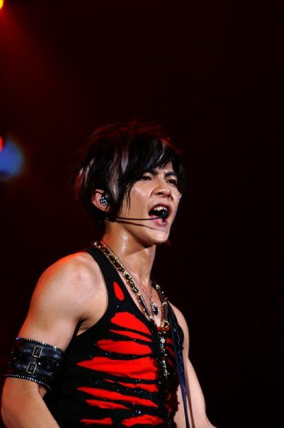

Celsius Fracture · Fahrenheit Winter
真实疏远，不是对称的「爱恨」
飞轮海同船出道，却在解散后走成公开失联。粉丝 CP 叙事喧哗多年；炎亚纶多次实录杀 CP，否认爱过、否认友谊。汪东城侧则回避配对、强调直男身份。本章以温度差为界面——冬侧 41°F 对夏侧 95°F——对照两边几乎不同步的发言轨。
FRAMING
CP 恋情 = 粉丝创作 / 传闻，已被炎亚纶实录否认。播客中的骚扰与性取向嘲笑指控为单方证词；他方未在本站复核来源中给出对等实录回应。勿与艺人其他司法案件混为一谈。
CP 恋情 = 粉丝创作 / 传闻，已被炎亚纶实录否认。播客中的骚扰与性取向嘲笑指控为单方证词；他方未在本站复核来源中给出对等实录回应。勿与艺人其他司法案件混为一谈。
交互 · 温度拨盘
炎亚纶侧 · 冬
41°F
Fahrenheit「冬」意象
走廊体感合成
汪东城侧 · 夏
95°F
Fahrenheit「夏」意象
图墙 · 团体 / 单人




模块 · 四人座 · 除名隐喻
巡回巴士的四个位子
2024 年汪东城被问及飞轮海重聚时，玩笑式点名「另外三个」为自己、辰亦儒与郭品超——舆论读作对炎亚纶的除名。下方示意非纪实座位表。
吴尊
2011 退团
2011 退团
辰亦儒
汪东城
炎亚纶
2024 玩笑除名?
2024 玩笑除名?
模块 · 双轨时间线
两边很少同步的发言
炎亚纶轨
2005-12-28
飞轮海出道
实录
2014-09
访谈：只与吴尊联络；汪、辰「都不是朋友」，「演不了」
实录
2024-02-26
回复网友：「我从来没爱过汪东城…我怎么可能会爱一个整天以性取向羞辱人的人？」
实录
2024-11
活动：不会飞轮海重聚；与汪「观念差异」；「解铃还须系铃人」
媒体转述
2025-12 / 2026-02
播客再提团体创伤：「摸彩球」指控、被讪笑同志、「靠喝酒过日子」
单方指控
2026-03-17
直播：「我连他电话都没有」；劝 CP 粉停手
实录
汪东城轨
2005-12-28
飞轮海出道（同日）
实录
2014
回应炎亚纶「不是朋友」：受伤；称未必是最好朋友，但是一起走过很多的伙伴
实录
2024-02
被问重聚：开玩笑找「另外三个」= 自己+辰亦儒+郭品超
社交实录
直播（报道）
「哥包直的 / 铁直」；「别再把我跟那个联想在一块」
SETN 转述
网传
酒店门锁、炎追汪等「单箭头」桥段
传闻 · 未核实
交互 · 杀CP 收据
「我从来没爱过汪东城」
「我连他电话都没有」
汪 / 辰「都不是朋友」
视觉隐喻：紧闭的后台房门 — 非纪实场景 · 勿当作事件还原
「我从来没爱过汪东城…我怎么可能会爱一个整天以性取向羞辱人的人？」
炎亚纶 · 2024-02-26 社交回复 · 联合早报报道 · 实录
2005–2011
偶像高峰：《终极一班》等、专辑、巡演；粉丝 CP 文化兴起
公开履历
2011-06
吴尊退团；三人组短暂延续
实录
约 2012–2013
汪东城离开公司 / 单飞；团体活动实质结束
行业综述
2014 → 2026
公开疏远固化：无核实私人联系；四成员重聚在商业/法务/情感上均极不可能
状态归纳
深潜 · 杀CP 语料库
可核对的「否定句」
把公开否定句单独陈列，避免被剪辑进 CP 混剪时丢上下文。每条保留证据等级。
否定 · 炎
2014
汪、辰「都不是朋友」；「演不了」
实录
2024-02
「我从来没爱过汪东城」
实录
2024-11
否认飞轮海重聚可能；观念差异
转述
2026-03
「我连他电话都没有」
实录
回避 · 汪
2024-02
重聚点名「另外三个」不含炎（玩笑/社交）
社交实录
直播
强调直男；勿再与「那个」联想
SETN
—
未见对等「我也想复合」实录（本站复核范围内）
缺席即信息
深潜 · 播客指控层
ALLEGATION LAYER · 阅读协议
2025–2026 播客（《哇!有事嗎》《激罵揪某聊》等）中，炎亚纶描述出道期「摸彩球」游戏、长期被以性取向取乐、以及「一整年靠喝酒过日子」。这些是有出处的单方叙述，不是法院认定，也不是其他成员的对等承认。本站把它们放在「可核实过滤」之外的指控层：想看完整舆论噪音就关过滤；只想要双方对得上的公开关系状态，就打开「只看可核实」。
2025–2026 播客（《哇!有事嗎》《激罵揪某聊》等）中，炎亚纶描述出道期「摸彩球」游戏、长期被以性取向取乐、以及「一整年靠喝酒过日子」。这些是有出处的单方叙述，不是法院认定，也不是其他成员的对等承认。本站把它们放在「可核实过滤」之外的指控层：想看完整舆论噪音就关过滤；只想要双方对得上的公开关系状态，就打开「只看可核实」。
你怎么框定这段关系？（本地匿名，仅存你的浏览器）
CAVEATS
· 「摸彩球」与性取向嘲笑 = 炎亚纶播客指控，未经本站所引新闻独立裁决。
· 「和解橄榄枝」类标题多为编辑框架，需核对原始片段。
· 「飞轮海」IP 多半归属原公司——重聚 ≠ 只差一句「和好」。
· 「摸彩球」与性取向嘲笑 = 炎亚纶播客指控，未经本站所引新闻独立裁决。
· 「和解橄榄枝」类标题多为编辑框架，需核对原始片段。
· 「飞轮海」IP 多半归属原公司——重聚 ≠ 只差一句「和好」。